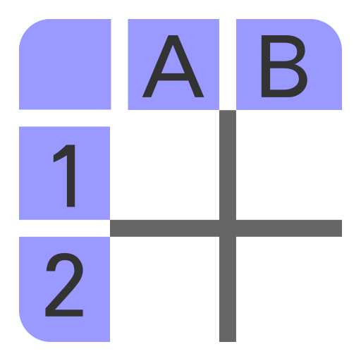
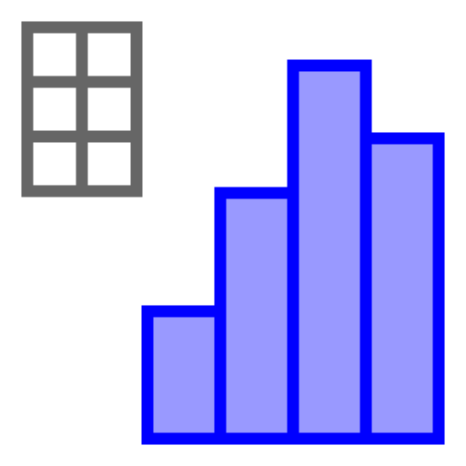
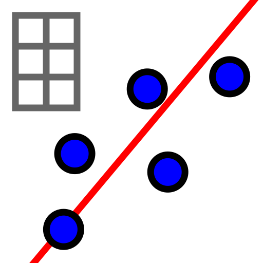

Regresjon#
Læringsmål: regresjon
Etter dette delkapitlet, er målet at du skal:
Kunne bruke regresjon til å bestemme en lineær modell basert på et datasett.
I mange praktiske situasjoner, er det ikke helt opplagt hva sammenhengen mellom to størrelser er. En strategi for å prøve å finne en modell som beskriver sammenhengen mellom de to variablene er å samle inn data og lage en modell basert på dataene.
Måten vi lager en modell basert på dataene kalles for regresjon.
Eksempel 1: Modeller basert på data
Vi har data for antall kilometer vi har kjørt som funksjon av tiden vi har brukt:
Tid |
Kilometer |
|---|---|
15 |
18 |
30 |
35 |
45 |
55 |
60 |
78 |
75 |
90 |
90 |
120 |
Basert på dataene over kan vi lage en figur og forsøke å finne den linja som passer best. Hvilken av linjene passer best til dataene?
{kind=link}
Løsning
Vi kan merke oss at den grønne linja stiger for raskt og passer ikke spesielt godt til punktene. Både den rød og en blå linja følger punktene godt og ser ut til å ha samme stningstall. Men den rød linja har en tendens til å ligge på oversiden av punktene, mens den blå linja ligger på oversiden og undersiden av punktene i en jevn fordeling. Derfor vil vi si at den blå linja passer best til dataene.
Regresjon#
I eksempel 1 argumenterte vi for at én av modellene passet bedre enn de andre. En metode får å finne den beste modellen i lys av dataene, kalles for regresjon. Regresjon innebærer tre ingredisenser:
Samle inn et datasett med målinger \((x, y)\).
Velg en modellklasse som du tror kan forklare sammenhengen mellom \(x\) og \(y\).
Bruk regresjon til å bestemme hvilken modell i modellklassen som passer best til dataene.
Regresjon kan gjøres både med Geogebra og Python – her får du selv velge hvilken læringssti du vil følge. Husk at du alltid kan bytte sti underveis.
Hvis jeg er markert, vil du jobbe med regresjon i Geogebra.
Og i Geogebra kan du også velge mellom å bruke regneark eller CAS!
Hvis jeg er markert, vil du jobbe med regresjon i CAS.
Hvis jeg er markert, vil du jobbe med regresjon ved hjelp av regneark.
Hvis jeg er markert, vil du jobbe med regresjon i Python.
Utforsk 1
Et datasett er gitt ved
\(x\) |
\(0\) |
\(1\) |
\(2\) |
\(3\) |
|---|---|---|---|---|
\(y\) |
\(-1\) |
\(1\) |
\(3\) |
\(5\) |
I CAS vinduet under vises det hvordan man kan bestemme en lineær modell ved hjelp av regresjon. Vi gjør dette i to steg:
Vi lager en liste med punktene \((x, y)\).
Vi bruker
LinReg-funksjonen som gir oss en lineær modell (Lin = lineær og Reg = regresjon).
Du kan bestemme en regresjonsmodell ved å følge disse stegene i vinduet under:
Åpne regneark  og skriv inn tallene i to kolonner nedover.
Trykk på rullemenyen med ikonet  og bla ned og velg regresjonsanalyse 
Velg en regresjonsmodell
Trykk på og velg “Kopier til grafikkfeltet”
Oppsummering: oppskrift på regresjon
Åpne regneark og skriv inn tallene i to kolonner nedover.
Trykk på rullemenyen med ikonet og bla ned og velg regresjonsanalyse
Velg en regresjonsmodell
Trykk på og velg “Kopier til grafikkfeltet”